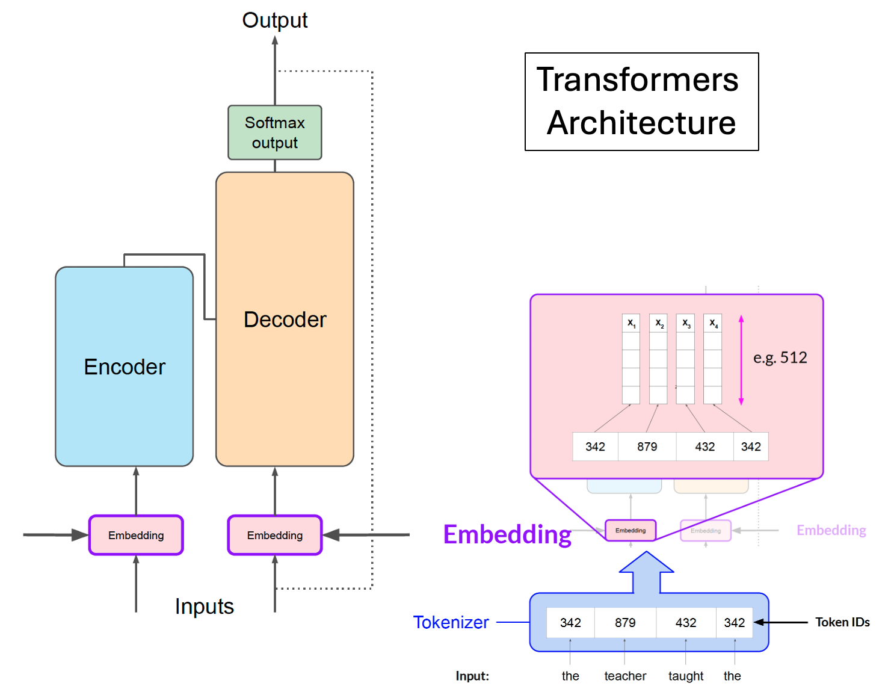

Using Transformers to run LLMs#
Basic workflow for using transformers#
Load the model parameters
Convert prompt query to tokens
Call model to process tokens and generate response tokens
Decode tokens to text response

Adapted from teaching materials created by DeepLearning.AI.
Run Llama2 model with transformers#
Llama2 model on the Hugging Face site: https://huggingface.co/meta-llama/Llama-2-13b-chat-hf
Python script#
##################################
# transformers calling Llama2 model
##################################
from transformers import AutoTokenizer, AutoModelForCausalLM
from transformers import BitsAndBytesConfig
import time
import pandas as pd
from pathlib import Path
def run_llama2(llm_dir, llm_model, query, customize_setting):
#######################################
# 1. Load the model parameters
#######################################
# The quantization_config is optional; use it for very large model; it reduces memory and computational costs by representing weights and activations with lower-precision data types
# To use quantization, uncomment the following two lines and comment out the current "model = " line
# quantization_config = BitsAndBytesConfig(load_in_8bit=True)
# model = AutoModelForCausalLM.from_pretrained(llm_model,cache_dir=llm_dir, device_map="auto", quantization_config=quantization_config)
model = AutoModelForCausalLM.from_pretrained(llm_model,cache_dir=llm_dir, device_map="auto")
tokenizer = AutoTokenizer.from_pretrained(llm_model, cache_dir=llm_dir)
#######################################
# 2. Convert prompt query to tokens
#######################################
device = "cuda"
model_input = tokenizer(query, return_tensors="pt").to(device)
print(f"=== Customized setting:")
for key, value in customize_setting.items():
print(f" {key}: {value}")
#######################################
# 3. Call model to process tokens and generate response tokens
#######################################
outputs = model.generate(**model_input, **customize_setting)
#######################################
# 4. Decode tokens to text response
#######################################
decoded = tokenizer.decode(outputs[0], skip_special_tokens=True)
print("====================")
print(f"LLM model: {llm_model}")
print(f"Query: {query}")
print("Response: ")
print(decoded)
print("====================")
#######################################
# Logging
#######################################
finished_time = time.strftime('%Y-%m-%d %H:%M:%S', time.localtime())
columns = ["llm_model", "query", "response", "finished_time"]
row = [llm_model, query, decoded, finished_time]
for key, value in customize_setting.items():
columns.append(key)
row.append(value)
df = pd.DataFrame([row], columns=columns)
llm_name = llm_model.split("/")[-1]
log_file = Path(f"./log_{llm_name}.csv")
df.to_csv(log_file, index=False, mode='a', header=not log_file.exists())
# Set up model directory info; set to your own project space if using new model
llm_dir = "/kellogg/data/llm_models_opensource/llama2_meta_huggingface"
# Model name from Huggingface site
llm_model = "meta-llama/Llama-2-7b-chat-hf"
# llm_model = "meta-llama/Llama-2-13b-chat-hf"
# llm_model = "meta-llama/Llama-2-70b-chat-hf"
# For Llama2 chat, need to enclosed your prompt by [INST] and [/INST]
query = "[INST] Tell a fun fact about Kellogg Business School. [/INST]"
# Settings for LLM model
customize_setting = {
"max_new_tokens": 400,
"do_sample": True,
"temperature": 0.8,
}
run_llama2(llm_dir, llm_model, query, customize_setting)
Slurm script#
# Run on Quest
#!/bin/bash
#SBATCH -A e32337
#SBATCH -p gengpu
#SBATCH --gres=gpu:a100:1
#SBATCH -N 1
#SBATCH -n 1
#SBATCH -t 0:30:00
#SBATCH --mem=40G
module purge
module load mamba/23.1.0
source /hpc/software/mamba/23.1.0/etc/profile.d/conda.sh
source activate /kellogg/software/envs/gpu-llama2
python test_llama2.py
Output:
Loading checkpoint shards: 0%| | 0/2 [00:00<?, ?it/s]
Loading checkpoint shards: 50%|█████ | 1/2 [00:08<00:08, 8.81s/it]
Loading checkpoint shards: 100%|██████████| 2/2 [00:11<00:00, 5.48s/it]
Loading checkpoint shards: 100%|██████████| 2/2 [00:11<00:00, 5.98s/it]
=== Loading time: 16.65569519996643 seconds
=== Customized setting:
max_new_tokens: 400
do_sample: True
temperature: 0.8
====================
LLM model: meta-llama/Llama-2-7b-chat-hf
Query: [INST] Tell a fun fact about Kellogg Business School. [/INST]
Response:
[INST] Tell a fun fact about Kellogg Business School. [/INST] Here's a fun fact about the Kellogg School of Management at Northwestern University:
Did you know that the Kellogg School of Management has its own on-campus ice cream shop? Yes, you read that right! The Kellogg Ice Cream Shop is a popular spot on campus where students can indulge in their sweet tooth and enjoy a variety of ice cream flavors, including some unique and creative flavors like "Chocolate Chip Cookie Dough" and "Cinnamon Swirl." The shop is run by students in the Kellogg School of Management's Food, Self, and Society course, which focuses on the business of food and the social and cultural impact of food systems. So, next time you're at Northwestern University, be sure to stop by the Kellogg Ice Cream Shop and enjoy a sweet treat while learning about the business of ice cream!
====================
Execution time: 23.751539945602417 seconds
Finished at: 2024-04-03 11:05:05
====================
Run Mistral model with transformers#
Mistral model on the Hugging Face site: https://huggingface.co/mistralai/Mistral-7B-Instruct-v0.2
Check out scripts/transformers/test_mistral.py.
Run Gemma model with transformers#
Gemma model on the Hugging Face site: https://huggingface.co/google/gemma-7b-it
Check out scripts/transformers/test_gemma.py.